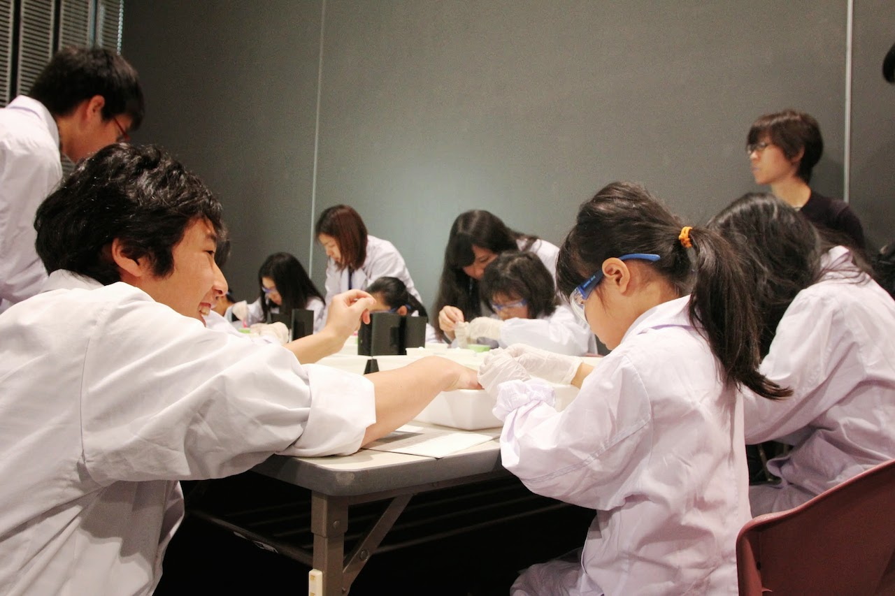
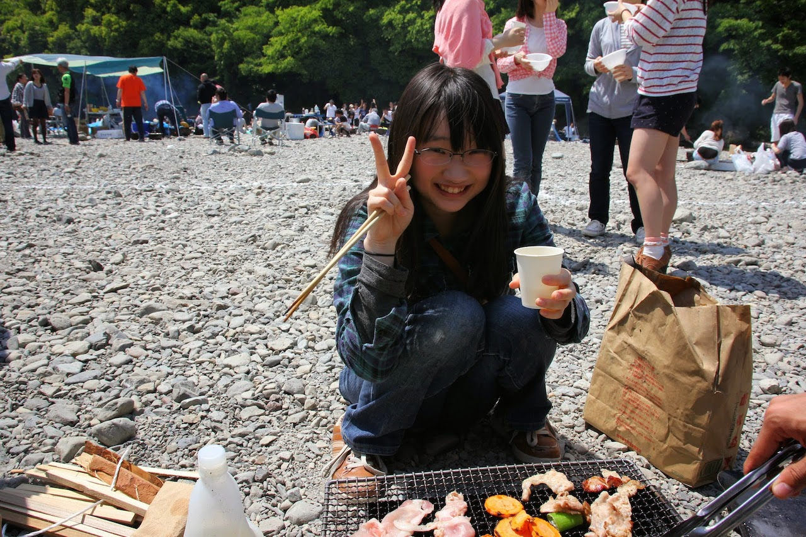
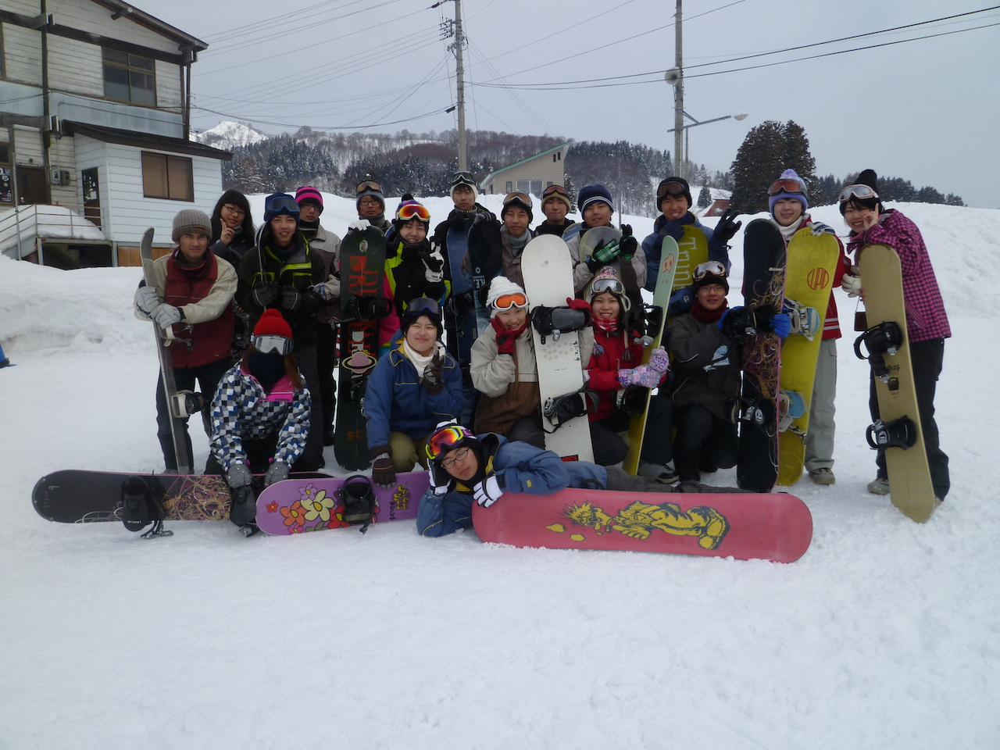

新入生向け活動紹介
TMU-SFCはいつでも新入部員を歓迎しています。
予備実験によって実験の技術が上がる他にも、書類作成によってWordやExcel、PowerPointの扱いも上達します。
また、プレゼン能力などの、学生生活や社会で必要とされる能力を身につけることができます！
化学コースの学生はもちろん、他学科の方や子どもが好きな方も気軽にご連絡ください！
連絡先: tmusfc@gmail.com
部室: 学生ホール4階405室
活動内容
私たちTMU-SFCは子ども達を対象とした化学実験教室の企画・運営を行っています。
1. 出張実験
私たちTMU-SFCは近隣の小学校や科学館から依頼を受け、小学生を対象に実験教室を開催しています。
毎回、出張実験の前には必ず予備実験を行っています。ここで、当日の打ち合わせや準備を行います。
また、２，３年生は発表用スライド、実験ノートなどの作成を行っています。
本番当日は実験の発表者と実験補助に分かれ、実験補助は参加者の手助けや試薬の準備などを行います。
2. その他
実験教室以外にもBBQやスキー・スノボ合宿などのレクリエーションもおこなっています！
